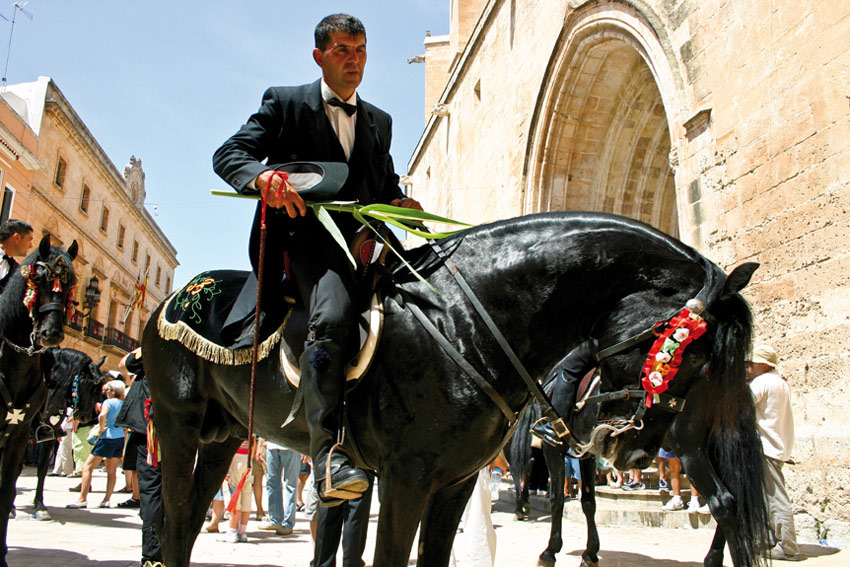

Las Fiestas, la veneración del caballo
 El caballo es uno de los animales más nobles que se conocen. Los menorquines lo saben bien, y llevan tiempo venerando a los equinos, hasta convertirlos en el centro de sus fiestas patronales. En verano, Menorca se funde con los caballos y, junto con ellos, celebra unas fiestas únicas, difícilmente descriptibles.
El caballo es uno de los animales más nobles que se conocen. Los menorquines lo saben bien, y llevan tiempo venerando a los equinos, hasta convertirlos en el centro de sus fiestas patronales. En verano, Menorca se funde con los caballos y, junto con ellos, celebra unas fiestas únicas, difícilmente descriptibles.
 El origen de estas celebraciones se encuentra en Ciutadella. En el siglo XIV se creó una obrería para encargarse de la iglesia rural de Sant Joan d'Artrutx, situada a unos cinco kilómetros de la ciudad. Esta organización incluía representantes de los diferentes estamentos sociales, los llamados 'caixers', que debían desplazarse a caballo hasta la iglesia, sobre todo en la vigilia de Sant Joan, cuando se celebraba un oficio religioso. La tradición se mantuvo año tras año, añadiéndose actos hasta dar forma al actual Sant Joan.
El origen de estas celebraciones se encuentra en Ciutadella. En el siglo XIV se creó una obrería para encargarse de la iglesia rural de Sant Joan d'Artrutx, situada a unos cinco kilómetros de la ciudad. Esta organización incluía representantes de los diferentes estamentos sociales, los llamados 'caixers', que debían desplazarse a caballo hasta la iglesia, sobre todo en la vigilia de Sant Joan, cuando se celebraba un oficio religioso. La tradición se mantuvo año tras año, añadiéndose actos hasta dar forma al actual Sant Joan.
Sin duda, son las fiestas más conocidas de Menorca. Durante los días 23 y 24 de junio, Ciutadella se transforma. Sus calles señoriales se visten para acoger a caballos y 'caixers', que reviven año tras año una tradición centenaria que se ha popularizado hasta convertirse en un acto seguido por miles de ciudadanos llegados de fuera de la Isla para disfrutar del increíble espectáculo.
Todos los pueblos de Menorca, incluso algunos núcleos turísticos o residenciales, tienen su fiesta patronal, y en todos ellos los caballos son los protagonistas. El acto central es siempre el jaleo, un momento en el que los 'caixers' deleitan a la gente con los saltos ('bots') de sus caballos al ritmo de una música que, pese a no ser originaria de la Isla, se ha convertido en una seña de identidad inequívoca de la esencia menorquina. Todas las celebraciones reúnen a una gran cantidad de gente, deseosas de disfrutar de los caballos y de sus jinetes (llamados 'caixers'), guiados siempre por el sonido del 'fabioler', la figura que abre la comitiva de caballos con el sonido peculiar del 'fabiol'.
Si tiene la oportunidad de pasarse por alguna de estas fiestas patronales, no la deje perder. Disfrute, sumérjase con precaución en la fiesta, y siéntase como un menorquín más.